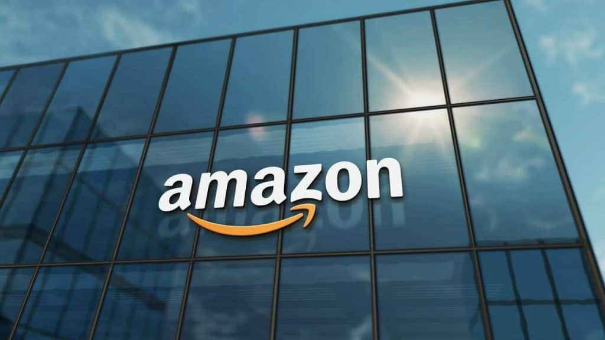
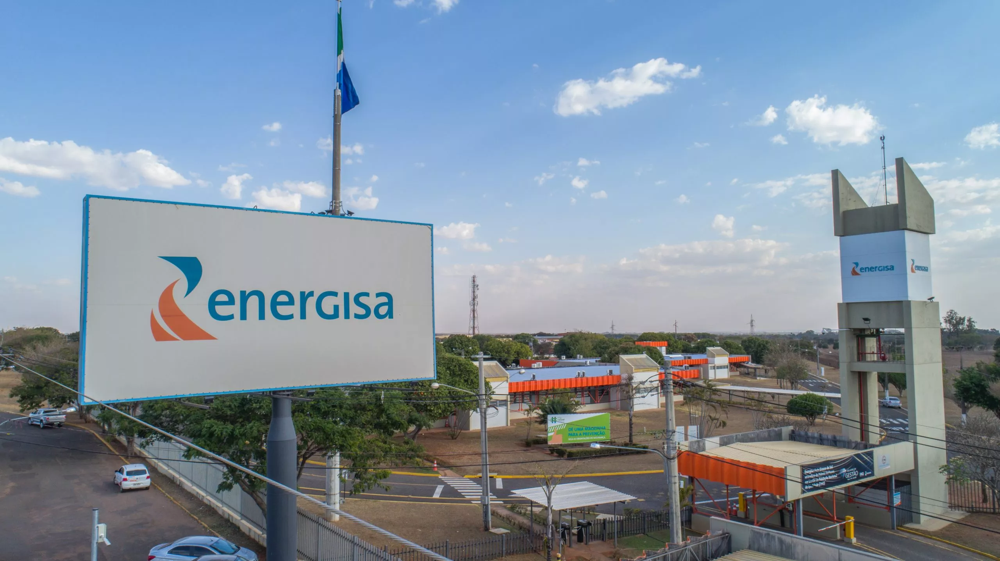
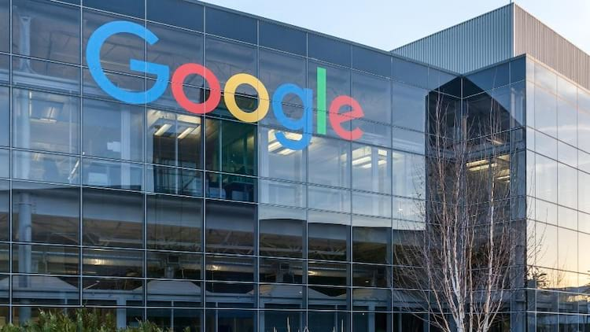
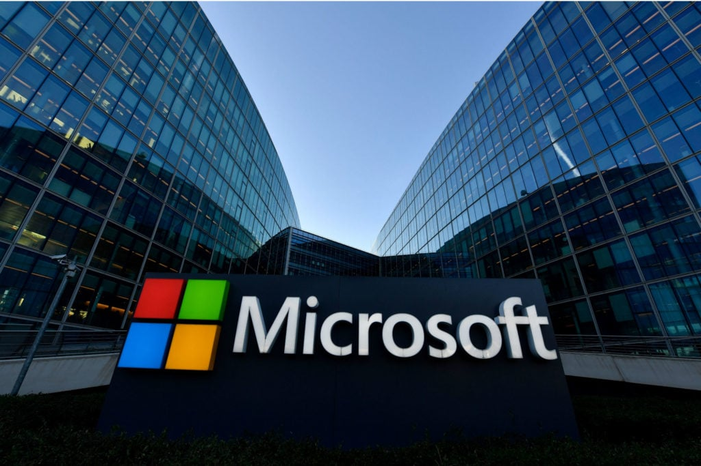
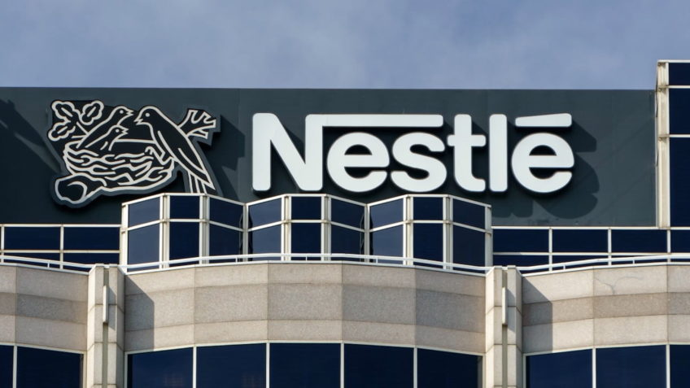
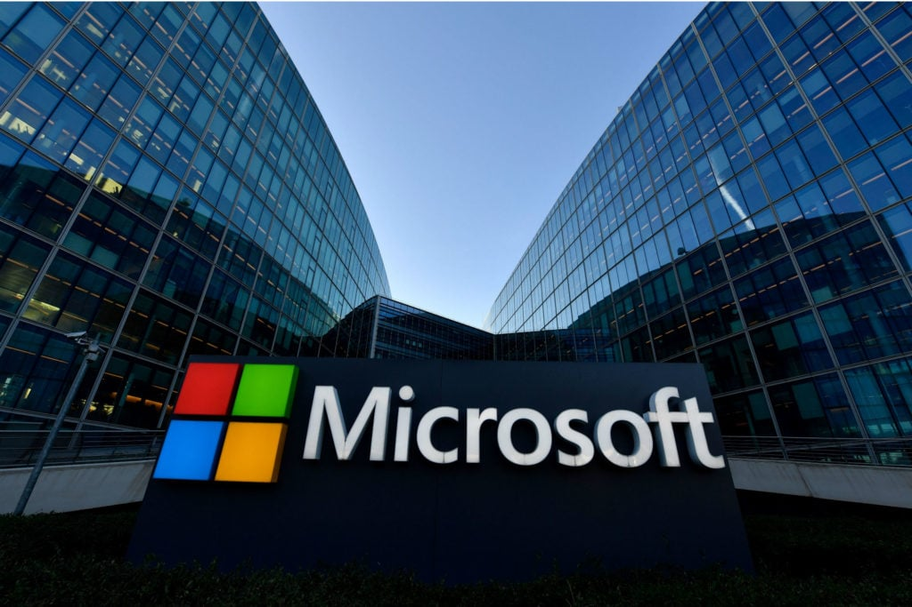
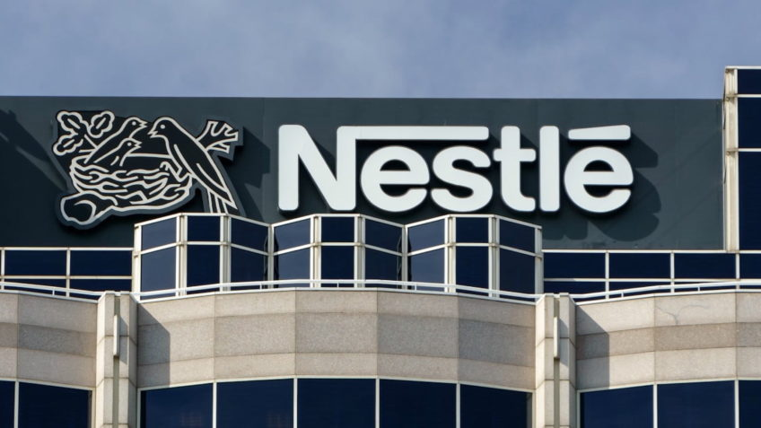
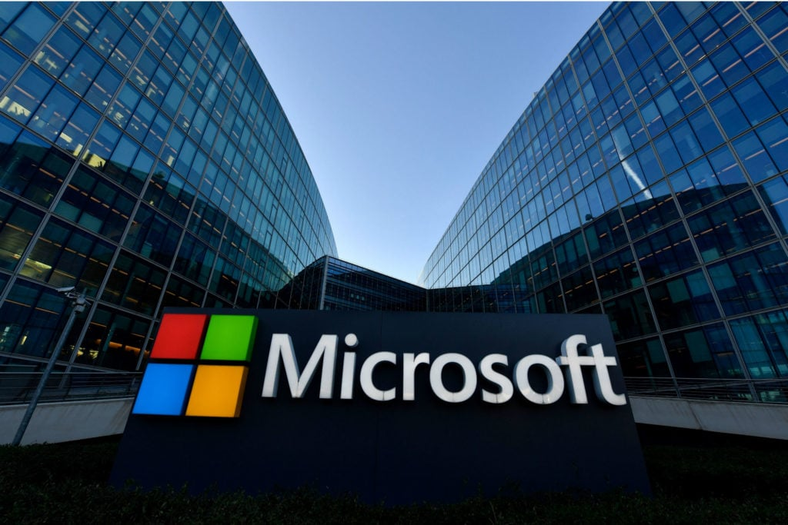
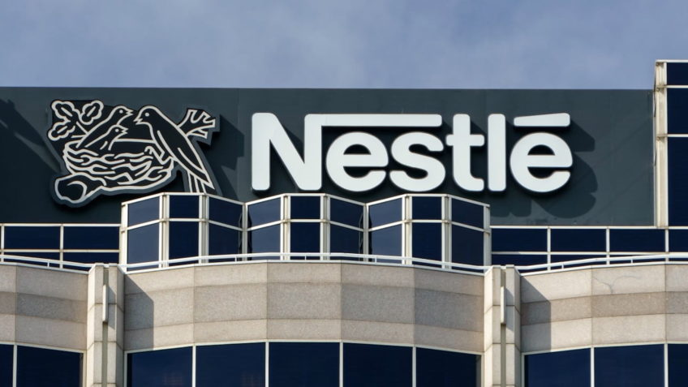

Mestres em tecnologia e manutenção de computadores
Clientes





Depoimentos
Amazon
"Trabalhar com essa empresa de tecnologia foi como turbinar nossos processos logísticos. A agilidade e escalabilidade das soluções entregues nos permitiram otimizar operações e melhorar ainda mais a experiência do cliente." — Diretor de Operações da Amazon Brasil
Energisa
"A parceria com essa empresa trouxe inovação real ao setor de energia. Suas soluções em IoT e monitoramento remoto transformaram nossa gestão de redes e trouxeram maior eficiência energética aos nossos clientes." — Gerente de Inovação da Energisa
Google
"Raramente encontramos fornecedores com tanta sinergia com nossa visão de futuro. A equipe é extremamente qualificada e conseguiu desenvolver soluções em nuvem e IA que complementam perfeitamente nossos produtos." — Líder de Engenharia do Google Cloud LATAM
Meta
"A integração das ferramentas desenvolvidas por essa empresa com nossas plataformas trouxe resultados surpreendentes. O foco em performance e segurança digital nos impressionou desde o início." — Head de Parcerias Estratégicas da Meta Brasil
Microsoft
"O nível técnico e o comprometimento com a entrega superaram nossas expectativas. Foram parceiros estratégicos no desenvolvimento de soluções corporativas utilizando Azure e inteligência artificial." — Diretor de Soluções Empresariais da Microsoft América Latina
Nestlé
"A digitalização dos nossos processos industriais foi acelerada com as soluções entregues por essa empresa. Ganhamos eficiência, rastreabilidade e conseguimos evoluir com foco na Indústria 4.0." — Gerente de Tecnologia e Produção da Nestlé Brasil
Samsung
"Os projetos desenvolvidos juntos representaram um salto em inovação. A capacidade de integrar software a hardware em nossos dispositivos nos ajudou a criar experiências mais inteligentes para os consumidores." — Diretor de Inovação da Samsung América do Sul
Tesla
"A empresa se destacou pela capacidade de entender nossas demandas complexas em mobilidade elétrica e entregar soluções tecnológicas robustas, alinhadas com nossa missão de acelerar a transição para energia sustentável." — Chefe de Engenharia de Software da Tesla Motors
 


